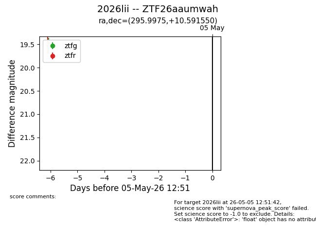
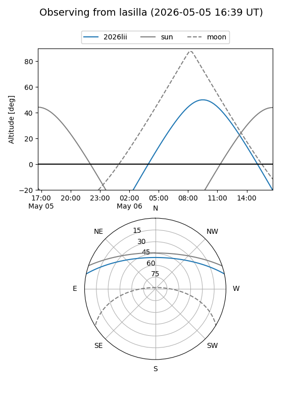
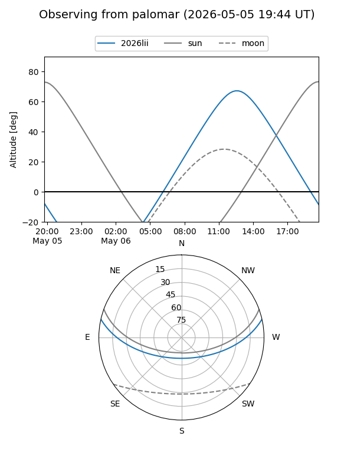

2026lii
Target 2026lii at 2026-05-05 13:11
Aliases and brokers:
FINK: link
Lasair: link
ALeRCE: link
TNS: link
YSE: link
alt names
ZTF26aaumwah (ztf,fink_ztf)
2026lii (tns,yse)
Coordinates:
equatorial (ra, dec) = 295.9975,+10.59155
equatorial (HMS+DMS) = 19:43:59.40,+10:35:29.58
galactic (l, b) = (48.4319,-6.60550)
Flags:
Photometry:
last ztfg=19.53
1 ztfg detections
Lightcurve

Visibility


Additional plots